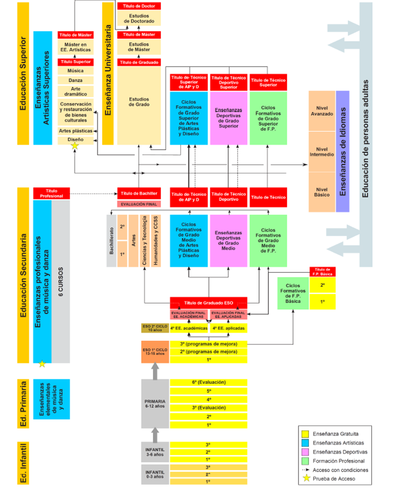

La educación formal
En el siguiente video se muestran los diferentes itinerarios formativos que os podéis encontrar al finalizar vuestros estudios de Educación Secundaria Obligatoria.
Video Editorial McGraw-Hill
Como hemos visto en el video anterior, se nos abren dos puertas: la FP o el Bachillerato. En el siguiente gráfico podéis ver que nos caminos cerrados, hay diferentes vías para alcanzar el máximo nivel de estudios.

La siguiente actividad consiste en detectar las "fake news" sobre la Formación Profesional. Para ello, después de visionar el video, contesta a las cuestiones planteadas:
Video www.todofp.es
- ENUMERA LOS TÓPICOS DE LA FP
- ¿CUÁNTOS CICLOS FORMATIVOS HAY PARA ELEGIR?
- LA FP, ¿CIERRA PUERTAS?
- ADEMÁS DE PREPARAR PARA EL MUNDO LABORAL, ¿QUÉ TE PERMITE DESARROLLAR?
- ¿CÓMO SE ESTUDIA EN FORMACIÓN PROFESIONAL?